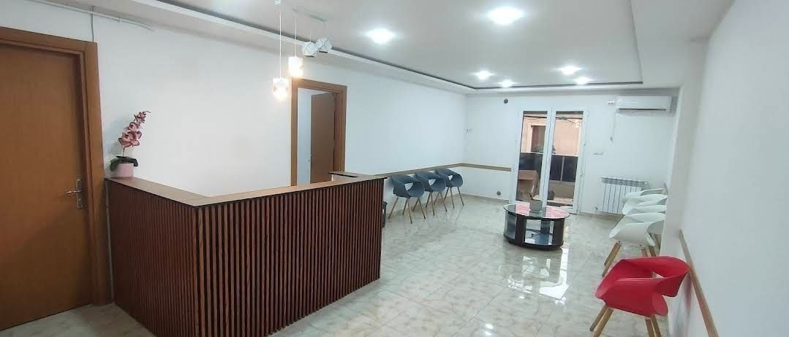
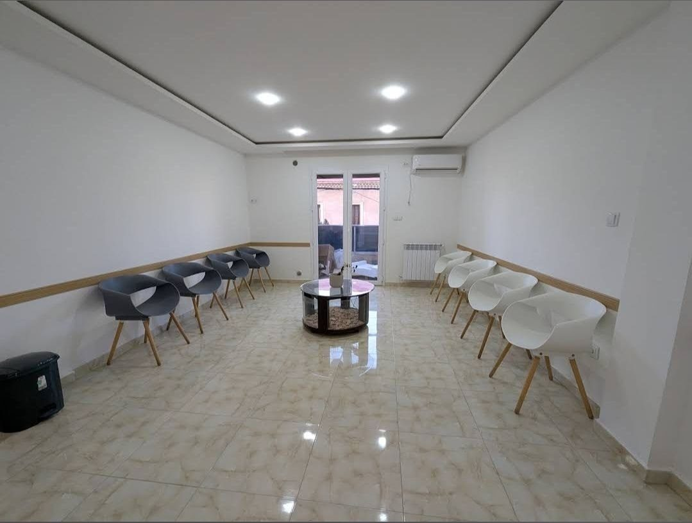
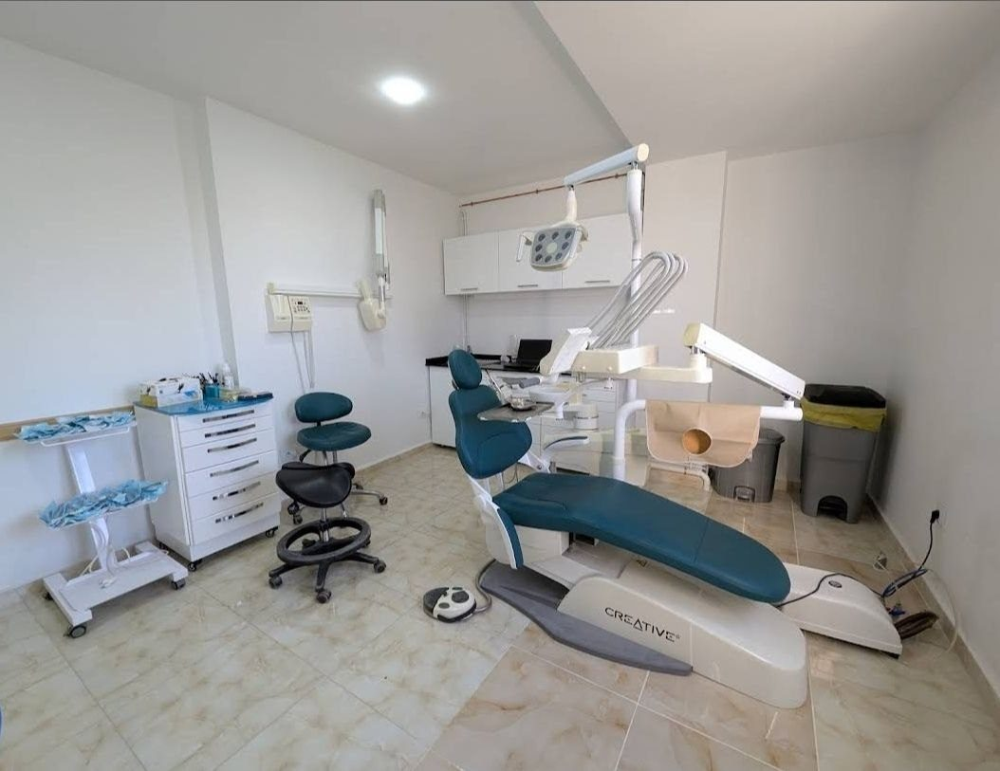
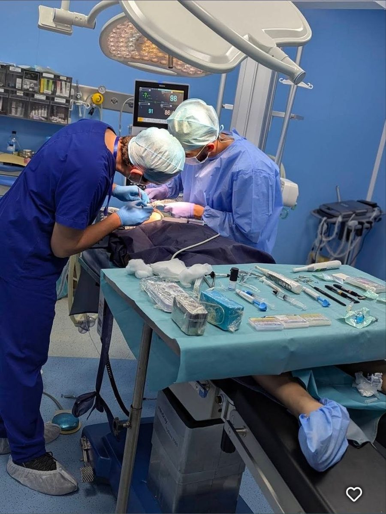

01
جراحة الفم
Oral Surgeon · Chirurgie orale
قلع الأضراس المعقدة وضرس العقل، واستئصال الأكياس والحالات الجراحية داخل الفم بدقة وراحة.
Cabinet Dentaire Spécialisé
في نجمع بين الخبرة والدقة والتجهيزات الحديثة لنمنحك علاجاً مريحاً ونتائج تدوم: من جراحة الفم وزراعة الأسنان إلى تجميل الابتسامة والتعويضات السنية.
عيادة متخصصة تغطي أهم احتياجات صحة الفم والأسنان وجمالها في مكان واحد.
Oral Surgeon · Chirurgie orale
قلع الأضراس المعقدة وضرس العقل، واستئصال الأكياس والحالات الجراحية داخل الفم بدقة وراحة.
Implantologie
زرعات ثابتة تعوّض الأسنان المفقودة وتمنحك مضغاً مريحاً ومظهراً طبيعياً يدوم.
Dentisterie esthétique
تبييض وتصميم ابتسامة متناسقة تعيد للأسنان لونها وشكلها بنتائج طبيعية.
Prothèse
تيجان وجسور وتركيبات متقنة تعيد وظيفة أسنانك وجمال ابتسامتك.
ابتسامة جميلة، حياة جميلة
· IDC ·
اسمنا يعبّر عن منهجنا: إتقان في كل خطوة، من الفحص الأول إلى الابتسامة النهائية.
جراحة، زراعة، تجميل وتعويضات دون الحاجة للتنقل بين عدة عيادات.
نشرح لك الخيارات والمراحل بوضوح قبل البدء حتى تكون مطمئناً.
بيئة هادئة ونظيفة وفريق يهتم بك من لحظة دخولك حتى خروجك.
مكان مضيء ونظيف ومرتب، وتجهيزات حديثة تجعل زيارتك مريحة من الاستقبال إلى العلاج.




صور من عيادتنا قبل العلاج وبعده. اضغط على أي صورة لتكبيرها.
أجوبة مختصرة على أكثر ما يسألنا عنه المرضى. وللحالات الخاصة، الاستشارة هي الأفضل.
تتم الزراعة تحت تخدير موضعي، فلا تشعر بالألم أثناء العملية. وقد تحس بانزعاج بسيط في الأيام الأولى يخف عادة بالأدوية التي يصفها الطبيب، وتُشرح لك كل التعليمات قبل وبعد العملية.
يحدد ذلك الفحص السريري والأشعة، فهو يعتمد على حالة اللثة وكثافة العظم وحالتك الصحية العامة. احجز استشارة ويشرح لك الطبيب الخيارات المناسبة لحالتك.
مع زراعة ناجحة ونظافة فموية جيدة ومتابعة منتظمة عند الطبيب، يمكن أن تدوم الزرعة سنوات طويلة. وتختلف المدة من شخص لآخر حسب العناية والعادات مثل التدخين.
لا، ليس دائماً. يُقرر الطبيب ذلك بعد الفحص والأشعة، خاصة إذا كان الضرس مائلاً أو مدفوناً أو يسبب ألماً أو التهاباً أو يؤثر على الأسنان المجاورة.
التبييض يفتّح لون الأسنان الطبيعية فقط، أما القشور فهي أغلفة رقيقة تُركَّب على الأسنان لتعديل اللون والشكل والفراغات معاً. يختار الطبيب الأنسب لك بعد معاينة أسنانك.
يختلف السعر حسب نوع العلاج وحالتك. بعد الفحص يعطيك الطبيب خطة علاج واضحة مع التكلفة قبل أن تبدأ، وتقدر تسأل مباشرة عبر الواتساب.
بسهولة: املأ استمارة الحجز في هذه الصفحة أو راسلنا عبر الواتساب أو اتصل بنا مباشرة على الرقم الموضح، ونؤكد لك الموعد في أقرب وقت.
سؤالك غير موجود؟ اسألنا عبر الواتساب